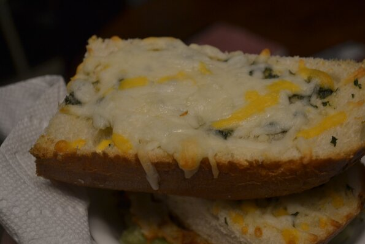

Garlic Bread

Description:
Garlic bread is always great with pasta! This cheese-covered garlic bread is
ready in minutes.
- ½ cup butter
- 1 ½ tablespoons garlic powder
- 1 tablespoon dried parsley
- 1 (1 pound) loaf Italian bread, cut into 1/2 inch slices
- 1 (8 ounce) package shredded mozzarella cheese
Steps:
- Preheat oven to 350 degrees F (175 degrees C).
-
In a small saucepan over medium heat, melt butter and mix with garlic powder
and dried parsley.
-
Place Italian bread on a medium baking sheet. Using a basting brush, brush
generously with the butter mixture.
-
Bake in the preheated oven approximately 10 minutes, until lightly toasted.
Remove from heat. Sprinkle with mozzarella cheese and any remaining butter
mixture. Return to oven approximately 5 minutes, or until cheese is melted
and bread is lightly browned.